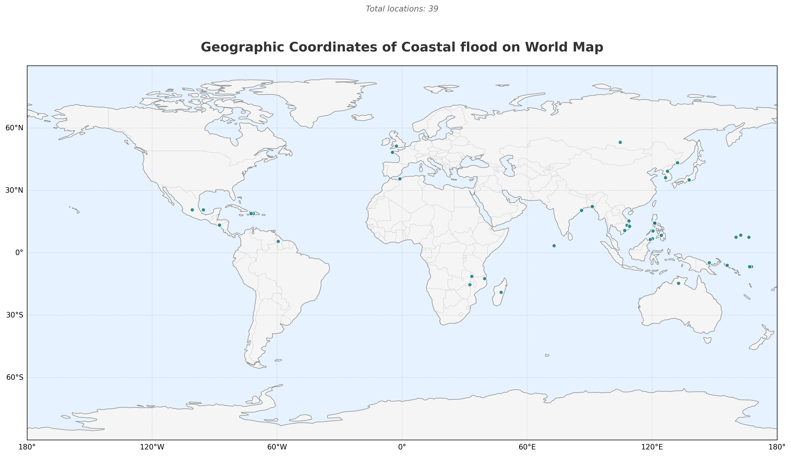
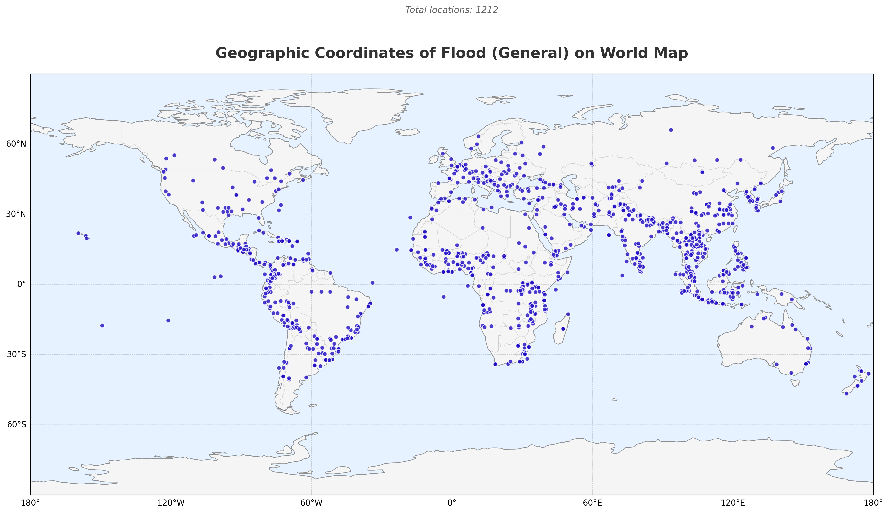

1 Introduction
1.1 About me
I’m Yoan Wallois, a data scientist and economist with over five years of experience developing robust analytical frameworks that combine econometrics, machine learning, and text mining. I recently completed my PhD in Economics at the University of Lille, where my research focused on innovative applications of these methods to finance and environmental economics.
My work is characterized by its methodological rigor and the diversity of data sources I handle. I’ve worked extensively with financial data from Datastream, transforming stock indices, composite indices, and treasury bond rates through GARCH models. I’ve collected and analyzed macroeconomic data from international institutions, processed geocoded microeconomic data on extreme climate events, and aggregated fiscal and macroeconomic datasets spanning multiple decades and countries. I’m equally comfortable with big data web scraping, interactive visualizations, and spatial analysis as I am with traditional time series and panel econometrics.
My published research in Review of World Economics demonstrates this multidisciplinary approach: I extracted and analyzed sentiment from IMF reports for 16 developed and emerging economies over 15 years, then assessed their impact on financial markets using dynamic panel estimations. Currently, I’m leading several ambitious projects. The first involves analyzing over 70,000 legislative texts across 197 countries in 73 languages to create a global environmental policy stringency database, combining NLP techniques, machine learning classification algorithms, and macro-climatic data analysis spanning 50 years. Another examines how extreme weather events—droughts, heatwaves, floods, storms—affect environmental policy adoption across 140 countries using nonlinear probabilistic econometric models. I’m also investigating fiscal multipliers in EU member states through structural VAR models. Beyond research, I contribute to academic governance as a member of my laboratory’s council and have taught various courses in macroeconomics and econometrics. I’m proficient in Python, R, Stata, SQL, and work comfortably with Git, LaTeX, and Linux environments.
I am now seeking an economist or data scientist position within a firm or organization where I can apply this expertise to address real-world challenges with direct operational impact. After five years developing rigorous research methodologies in academia, I’m eager to transition toward applied problems involving strategic decision-making support—whether analyzing market dynamics, assessing policy impacts, evaluating environmental and climate risks, or forecasting economic trends. I thrive in collaborative environments where I can contribute both technical depth and clear communication of complex results to diverse stakeholders. My ability to work autonomously, learn rapidly (I’m self-taught in Python and machine learning), and adapt to new domains makes me well-suited for dynamic organizations in finance, consulting, international institutions, think tanks, or the private sector. I’m looking for an opportunity where intellectual rigor meets practical application, where data-driven insights inform strategy, and where I can continue growing professionally while making meaningful contributions to my organization’s objectives.
1.2 About the Project
This project addresses a critical gap in climate risk assessment: only 5% of extreme climate events worldwide receive comprehensive cost evaluations. When disasters strike, insurers struggle to price risks in the regions that need coverage most, humanitarian organizations can’t efficiently allocate emergency resources, and policymakers lack the evidence to make informed adaptation decisions. This forecasting system estimates both economic damages and human impacts as extreme weather events unfold, providing timely information where it’s most needed.
The approach draws directly on the methodological toolkit I’ve developed throughout my research. Using R, I collect nightlight satellite data, opinion databases, and institutional and economic datasets, applying the same data management techniques I use across my academic projects. Python handles the extreme event database management and creates dynamic world map visualizations and animations to track impacts spatially and temporally—leveraging the geospatial analysis skills I’ve developed in my climate policy work. I apply text mining methods from my published IMF sentiment research to extract signals from news and opinion sources. Machine learning models including Random Forest, XGBoost, and neural networks are implemented in Python to learn from historical patterns and generate predictions, while my R-based econometric framework incorporates the spatial panel methods and nonlinear modeling approaches that characterize my research.
The technical challenge illustrates a problem central to applied economics: how do you build robust forecasts when comprehensive data exists for only a tiny fraction of events? This demanded creativity in feature engineering, drawing insights from unconventional sources like satellite imagery and social discourse, while requiring rigorous validation to ensure models generalize beyond limited training data. It also necessitated careful consideration of real-world operational constraints—what information is actually available immediately after an event, and how quickly can actionable predictions be generated? The system demonstrates direct operational relevance by expanding insurance coverage to underserved regions, enabling faster humanitarian response when timing is critical, and providing policymakers with quantitative evidence for prioritizing climate adaptation investments. It exemplifies applied research that is methodologically rigorous and draws on diverse data sources and advanced analytical techniques, yet remains fundamentally oriented toward solving real problems with measurable impact.
2 The extreme events
The Emergency Events Database (EM-DAT) is a comprehensive global database maintained by the Centre for Research on the Epidemiology of Disasters (CRED) at the Université catholique de Louvain in Belgium. Since its establishment in 1988, EM-DAT has served as one of the most authoritative sources of data on natural and technological disasters worldwide, providing essential information for humanitarian action, disaster preparedness, and policy development.
The database systematically records disasters that meet specific inclusion criteria, namely those causing ten or more deaths, affecting 100 or more people, or resulting in a declaration of a state of emergency or call for international assistance. It contains detailed information on the human impact, economic losses, and characteristics of thousands of disaster events dating back to 1900. Freely accessible to researchers, policymakers, and humanitarian organizations, EM-DAT has become an indispensable resource for analyzing spatiotemporal disaster patterns, quantifying vulnerability, and informing evidence-based strategies for disaster risk reduction and climate change adaptation.
2.1 The EM-DAT: data treatment
2.2 The EM-DAT: Sum Stats and plots

